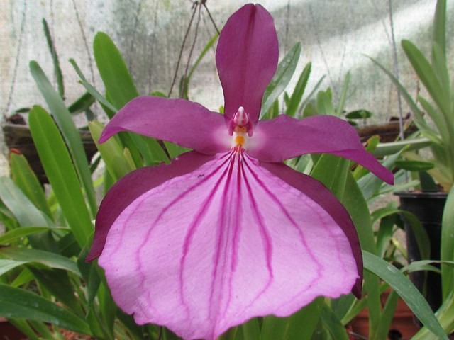
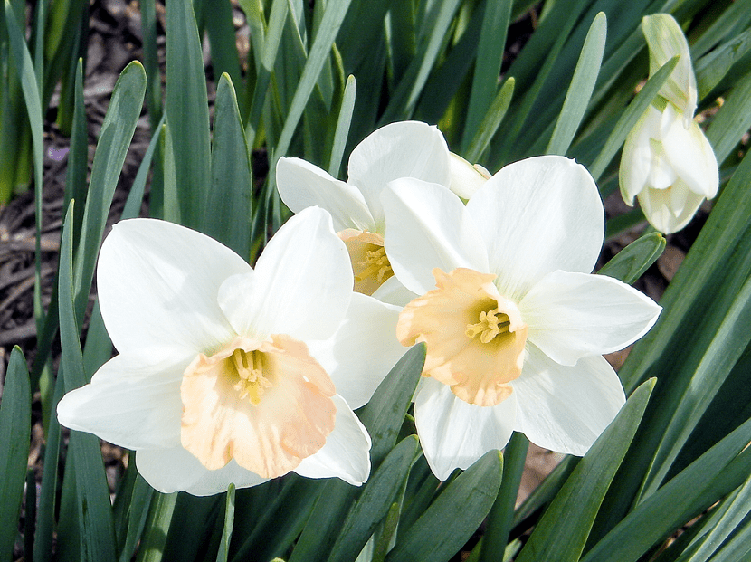
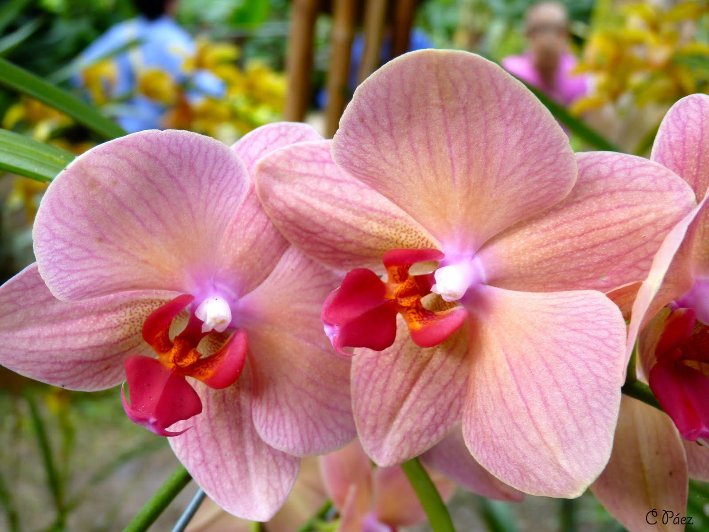
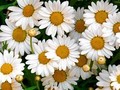
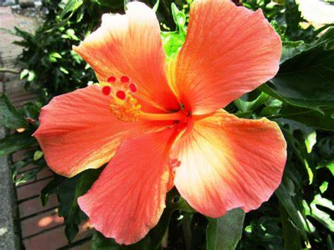

| nombre | descripción | imagen |
|---|---|---|
| moreliana | Las Morelianas Flor, también conocidas como Begonia Moreliana, son plantas originarias de México. Se caracterizan por sus hojas de color verde oscuro y con manchas |  |
| narcisos | l narciso es una flor que tiene un significado bastante generalizado. Simboliza el renacimiento, los nuevos comienzos y la vida eterna |  |
| orquidea | las orquídeas u orquidáceas (nombre científico Orchidaceae) son una familia de plantas monocotiledóneas que se distinguen por la complejidad de sus flores |  |
| margaritas | La flor margarita es una planta herbácea perenne con flores amarillas y blancas, originaria de Europa y Asia. |  |
| hibiscus | Es mayormente conocido como el tulipan mexicano, de climas calidos y tropicales como Jalisco |  |